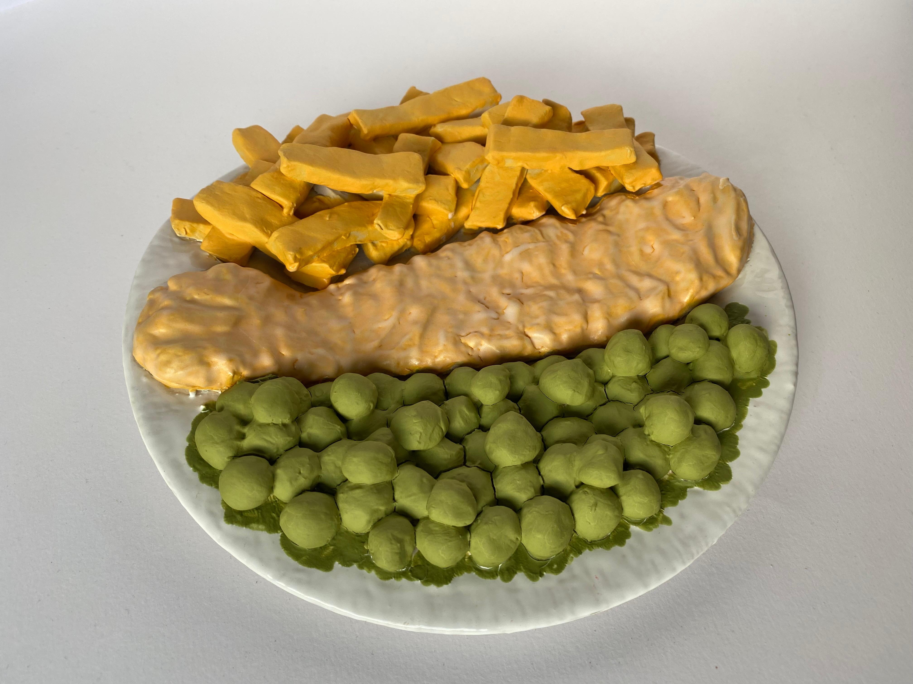
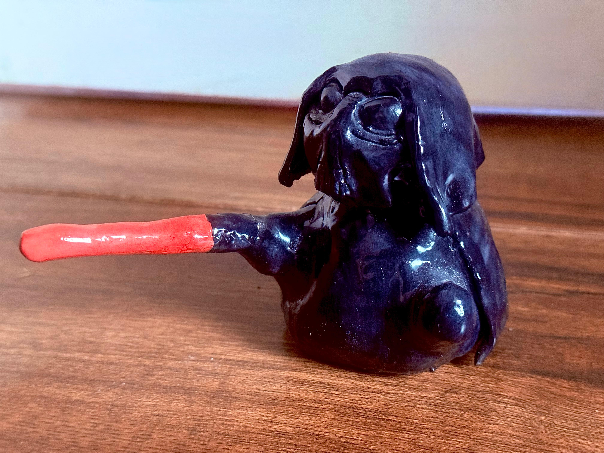

Projects I Have Done!
Fish and Chips

This was one of my first creations the Great Britis Fish and Chips. It was hand built onto a slip cast plate and glazed using a variety of underglazes. It was my first piece accepted at an exhibition in Peterbrough Cathedral in 2023. It is inspired by my favourite dish from the Wise Plaice Chip Shop in Melton Mowbray.
Homer Simpson Donut

This was a more recent piece I created inspired by Homer Simpson's favourite donut. It was again hand built and glazed with underglazes to try and recreate the classic donut. The hardest part was the sprinkles which were created with tiny coils of clay and glazed individually.
Darth Vader

I create a range of tubby creatures called Pot Bellied Pets. For May the Fourth Day I decided to make Darth Vader in this unique style. He is made using pinch pots and his light saber is supported with a metal nichrome wire and glazed using under glazes.